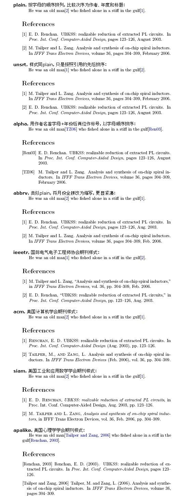

使用BibTex数据库管理文献
新建一个后缀为.bib的文件，去谷歌学术或者bing学术搜索文献名，点击
引用-BibTex，将内容复制到 xxx.bib 文件中，格式如下所示@article{needleman1970general, title={A general method applicable to the search for similarities in the amino acid sequence of two proteins}, author={Needleman, Saul B and Wunsch, Christian D}, journal={Journal of molecular biology}, volume={48}, number={3}, pages={443--453}, year={1970}, publisher={Elsevier} }配置latex
- 设置引用文献类型 -
\bibliographystyle{plain} - 引用文献 -
\cite{needleman1970general} - 在文献结尾处指定BibTex数据库文件，可以不加后缀，在前面加上字体指令
\small等可以调节引用字体的大小 -\bibliography{bibfile}
- 设置引用文献类型 -
编译。如果使用TexStudio直接运行即可。如果用命令行，需要按下面方式执行，其中test为你的latex文件
xelatex test bibtex test xelatex test xelatex test
附：引用文献样式
